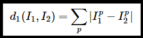
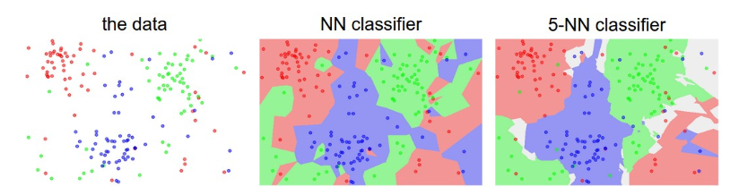

Andrej Karpathy in Stanford's cs231n class has explained this deeply. You can check out the course notes. You can also find his excellent lectures here.
Nearest Neighbour Classifier
Nearest Neighbour Classifier is one of the simplest kinds of Image Classifier and cosnidering its simplicity, it's pretty good. Anything is better than random guess anyway.
Nearest Neighbour classifier finds the L1 distance bwetween all the corresponding pixels of two images and adds them up. That sum of L1 distance between two images suggests how 'similar' two images are. Look at the the image below.

So as you can see, it's pretty straightforward and so is its implementation. I implemented this algorithm on two different datasets, MNIST dataset and CIFAR-10 dataset. And I couldn't run the algorithm over full test-sets because it was taking too much time training. I did it for the first 1000 examples on both datasets.
Applying Nearest Neighbour On MNIST Dataset
Applying Nearest Neighbour algorithm on first 1000 examples showed some promising results. Accuracy was found to be 45.9% which is pretty good.
Applying Nearest Neighbour On CIFAR-10 Dataset
Applying Nearest Neighbour algorithm on first 1000 examples of CIFAR-10 gave pretty average results. Accuracy was found to be 25.3% which is pretty okayish, but it gives us a solid idea that our algorithm is working.
K - Nearest Neighbour Classifier
Isn't it a bit strange that we only look for the label of most similar image in the training set when we wish to make a prediction? Something called a k Nearest Neighbour classifier almost always gives better results.
kNN makes a simple tweak to our previous strategy. Instead of finding the closest image in the training set, how about finding k most similar images and then let them vote for the most probable label. This exactly what a kNN does. Doing this makes kNN more resistant outliers (rebel examples).

An example of the difference between Nearest Neighbor and a 5-Nearest Neighbor classifier, using 2-dimensional points and 3 classes (red, blue, green). The colored regions show the decision boundaries. The white regions show points that are ambiguously classified (i.e. class votes are tied for at least two classes). Notice that in the case of a NN classifier, outlier datapoints (e.g. green point in the middle of a cloud of blue points) create small islands of likely incorrect predictions, while the 5-NN classifier smooths over these irregularities, likely leading to better generalization on the test data (not shown). Also note that the gray regions in the 5-NN image are caused by ties in the votes among the nearest neighbors (e.g. 2 neighbors are red, next two neighbors are blue, last neighbor is green).
But what value of k should we use ? Well there's no definite answer. We can try out a few values and choose the one which works best for us. So what we'll do is take out a small part of our training set and use it to check which value of k works best for us.
In our case, we have 50,000 examples in training set. Let's take out 1000 examples out and we'll call it a validation set. We'll train our kNN on remaining 49,000 examples and decide for the value of k by using the validation set. So the typical values of k which are found to good are 3,5,7,10 e.t.c. So here is a piece of code which tries out to find the most efficient value of k.
kNN Is Not Particularly Good
The Nearest Neighbor Classifier may sometimes be a good choice in some settings (especially if the data is low-dimensional), but it is rarely appropriate for use in practical image classification settings.
Pixel-based distances on high-dimensional data (and images especially) can be very unintuitive. An original image (left) and three other images next to it that are all equally far away from it based on L2 pixel distance. Clearly, the pixel-wise distance does not correspond at all to perceptual or semantic similarity.